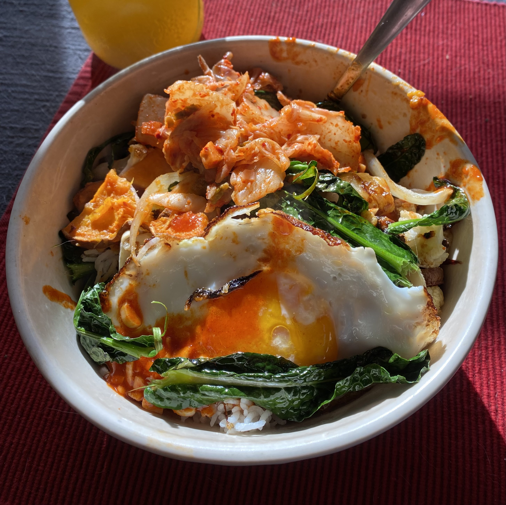

Kimchi Bowl

Description
A simple and delicious bowl that can take advantage of store bought kimchi.
Ingredients
- Rice
- Kimchi
- Roasted Vegetables (onion, mushrooms, sweet potato)
- Crispy Egg
- Sauce: gochujang, rice vinegar, sesame oil, minced garlic, soy sauce
Steps
- Make rice.
- At the same time as rice cooks, roast vegetables.
- When rice and vegetables are done, fry an egg until crispy.
- Assemble bowls with rice, roasted vegetables, crispy egg and kimchi.
- Mix sauce ingredients together to taste, and add to bowl.